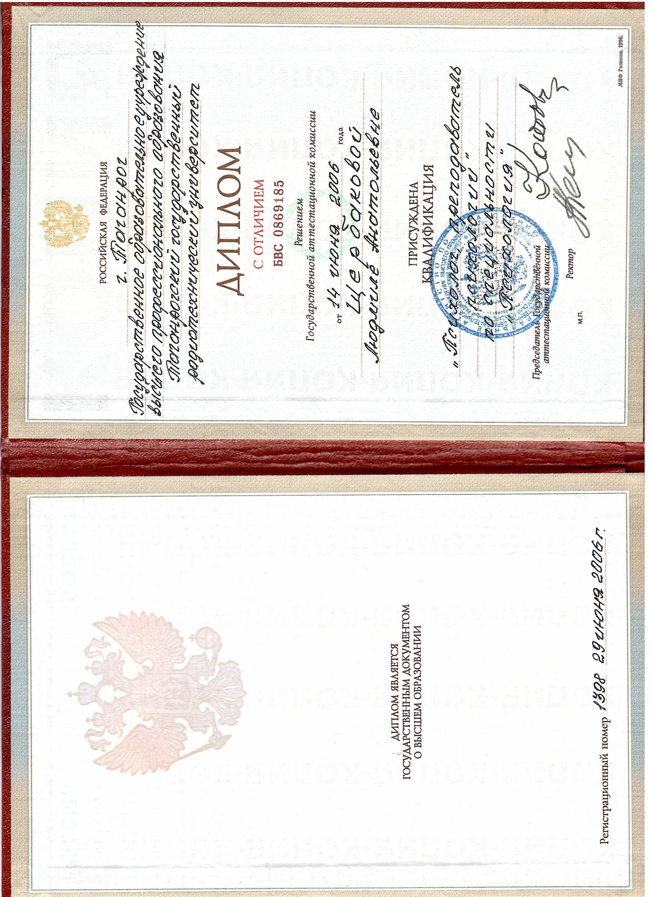
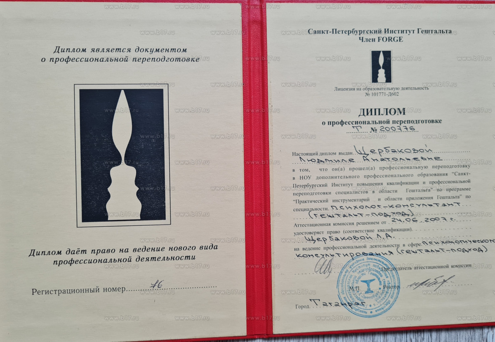
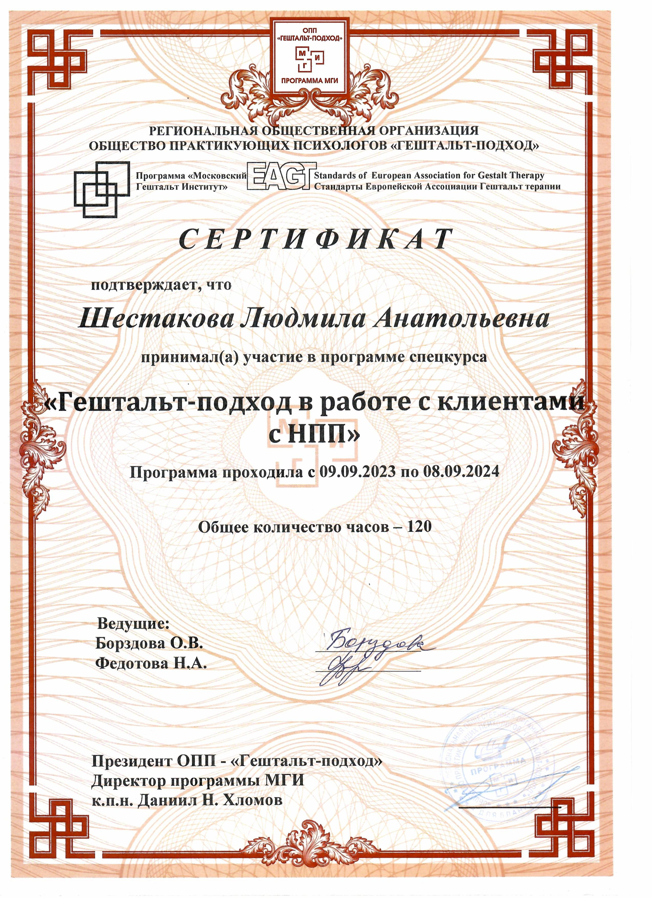
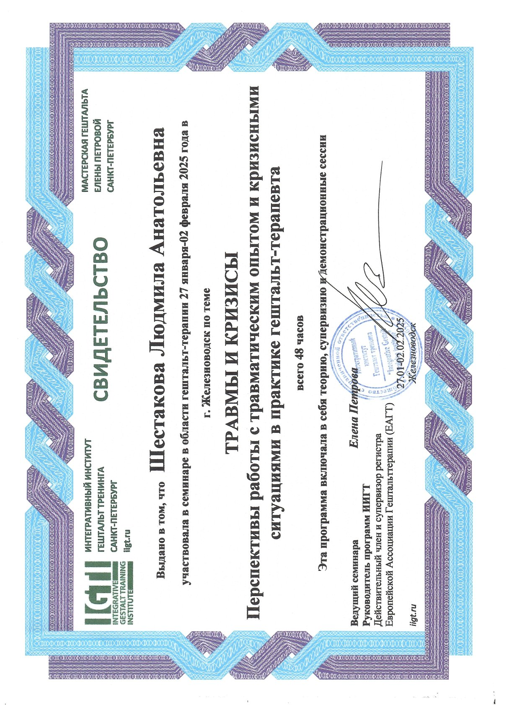
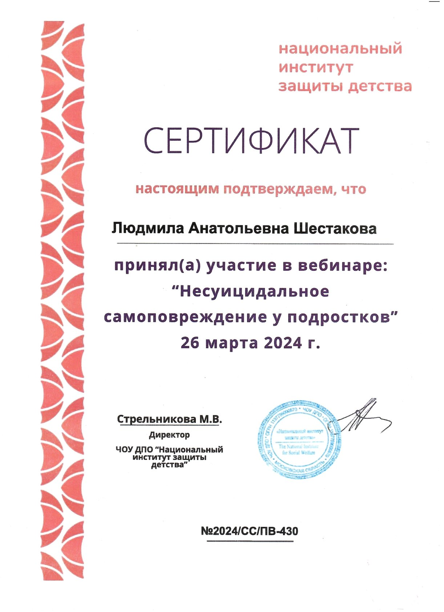
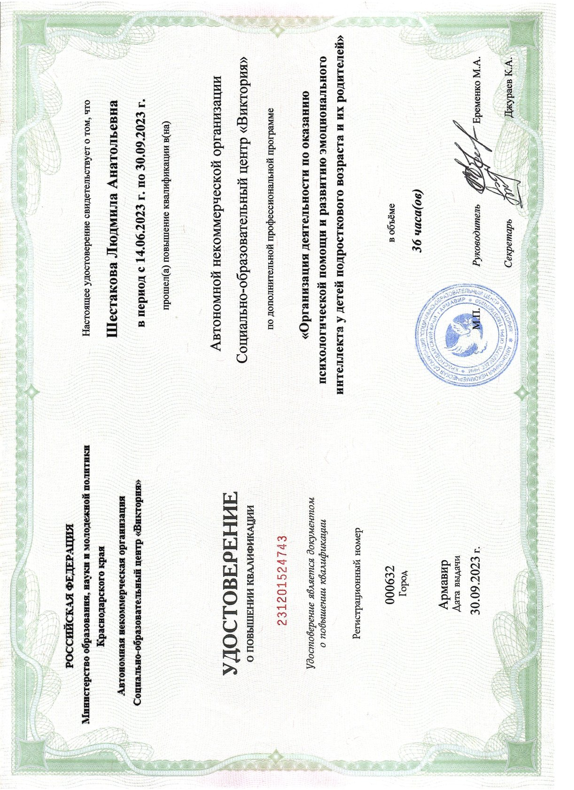
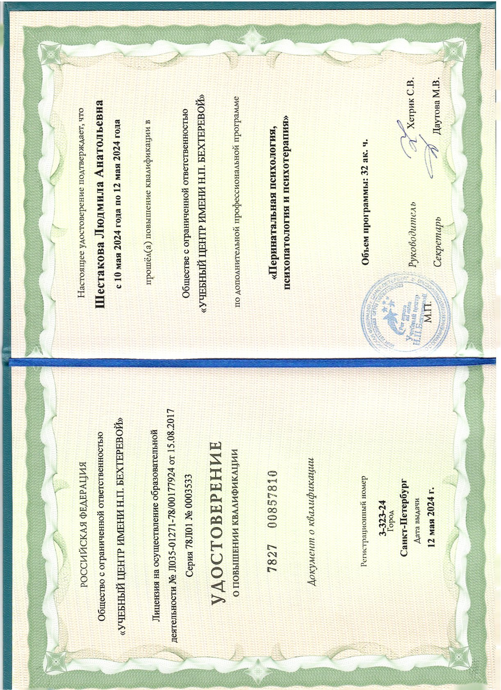

В мире, перегруженном ожиданиями, требованиями и нормами, бывает невероятно сложно услышать свой настоящий голос. Моя практика — это не ремонт «сломавшихся» механизмов психики и не раздача шаблонных советов по правильной жизни.
Это тихое, безопасное пространство, в котором мы бережно исследуем ваши внутренние ландшафты, распутываем сценарии отношений, исцеляем телесную память и восстанавливаем вашу природную целостность.
Заходить в терапию бывает тревожно. Здесь я отвечаю на вопросы, которые люди чаще всего держат в себе перед тем, как переступить порог кабинета.
«Бережность не означает слабость. Бережность — это способность выдерживать любую вашу правду с глубоким принятием.»
— Людмила ШестаковаОна начинается с готовности увидеть себя без защитных масок и привычных ожиданий. В моем присутствии вам не нужно быть «сильным», «успешным» или «удобным». Первые шаги — это просто создание безопасного моста между вашими истинными чувствами и разумом, без оценок и чувства вины.
Человек не существует в вакууме. Мы сотканы из связей: с нашей родительской семьей, детским опытом и нашими физическими реакциями. Разговоры в кресле часто бессильны, если тело продолжает кричать симптомом, а семейный сценарий незаметно диктует выбор партнера. Интеграция телесной терапии и гештальт-подхода позволяет распутывать узлы проблем на всех уровнях одновременно.
Ни в коем случае. Готовые шаблонные советы — это форма профессионального насилия, лишающая вас автономии. Моя задача — укрепить вашу внутреннюю опору и помочь вам увидеть скрытые ресурсы вашей собственной психики. Я помогу вам понять, почему вы принимаете те или иные решения, чтобы в итоге вы могли сделать свой собственный, абсолютно свободный выбор.
Будем честны: глубокие нейронные связи, семейные паттерны и зажимы в теле формировались годами, и переписать их за 50 минут невозможно. Однако, за первую сессию мы можем точно локализовать ядро вашей боли, обнаружить, куда уходит ваш жизненный ресурс, и составить бережный, экологичный маршрут для устойчивых внутренних перемен.
Вся моя терапевтическая и практическая работа структурирована по трем фундаментальным направлениям для точного терапевтического воздействия.
Глубокая терапевтическая работа с запросами личного характера: выход из депрессивных фаз, проработка навязчивых страхов, обретение самоценности и восстановление после острых кризисных событий.
Оздоровление отношений внутри семьи: бережная медиация конфликтов супругов, гармонизация детско-родительского контакта и помощь подросткам в обретении своего голоса без разрушения связей.
Бережные проективные методы работы, когда ум сопротивляется или слов недостаточно для выражения глубинной боли. Работа с мышечным панцирем и психосоматическими проявлениями.
Кабинет психотерапевта — это территория абсолютной психологической гигиены. Качество моей помощи держится на трех незыблемых профессиональных столпах:
Высшее психологическое образование и многолетняя переподготовка в практических методах. Никаких эзотерических и сомнительных околонаучных теорий.
Обязательное условие безопасной практики. Я регулярно прохожу личную психотерапию, супервизии в профессиональных сообществах и состою в балинтовских группах.
Строгий этический кодекс. Любые детали вашей истории, факт обращения и ваши переживания никогда не покинут пределы нашего терапевтического диалога.
Официальные свидетельства профессиональной компетентности







Каждая индивидуальная или семейная встреча длится ровно 50 минут. Это общепринятый стандарт терапевтического часа, позволяющий удерживать фокус внимания и сохранять глубину работы.
Видеосвязь (Zoom / Telegram / Яндекс.Телемост) из любой точки мира. Полностью равноценна личному приему.
Консультация в тихом, уютном и специально оборудованном кабинете в самом центре Ростова-на-Дону.
Прием в Семейном психологическом центре «Навстречу жизни» по адресу: Александровская ул., 77.
Парная сессия для супругов или детско-родительской пары. Глубокий разбор семейных сценариев и способов контакта.
Для тех, кто нацелен на долгосрочную терапевтическую работу. Фиксирует время в расписании.
Для очной работы созданы бережные условия в двух городах, чтобы каждая встреча проходила в обстановке безопасности, конфиденциальности и психологического комфорта.
Уютный приватный кабинет в тихом дворике исторического центра города. Качественная звукоизоляция, анатомические кресла, мягкий свет и натуральный чай для заземления.
Очный прием в Семейном психологическом центре «Навстречу жизни» (Александровская ул., 77). Специализированное пространство для индивидуальной и семейной терапии с теплой, поддерживающей атмосферой.
Заполнение этой формы — это не подписание контракта, а просто бережный способ сказать «я готов начать». Расскажите мне о себе в форме справа, и я свяжусь с вами в течение 24 часов.
Предпочитаете написать напрямую?